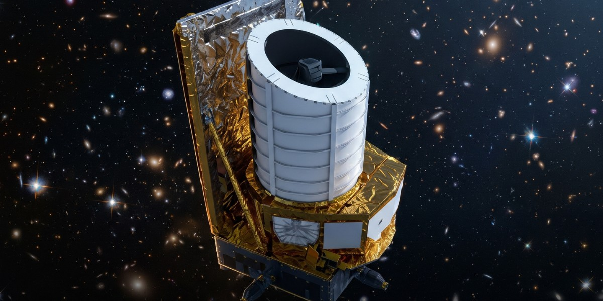

Geekotidien · Édition du 13 novembre 2026
Euclid, 900 M galaxies
La collaboration Euclid publie les données DR1-Foundation

La collaboration Euclid publie DR1-Foundation, un jeu de données couvrant environ 13 mois d'observations. Il comprend des images de plus de 900 millions de galaxies et les spectres de 160 millions d'entre elles. Ces données représentent 14 % du relevé prévu sur six ans.
La mosaïque publiée atteint environ 500 gigapixels. Le télescope, d'un diamètre de 1,2 mètre, a été lancé le 1er juillet 2023 par une fusée Falcon 9 ; il vise environ 1,5 milliard de galaxies.
Le CEA indique que les premiers résultats de cosmologie sont attendus vers la mi-2027. Le programme vise notamment à mieux comprendre la matière noire et l'énergie noire.
Le + : Ces données ne couvrent que 14 % du relevé prévu : les résultats majeurs sont attendus plus tard.